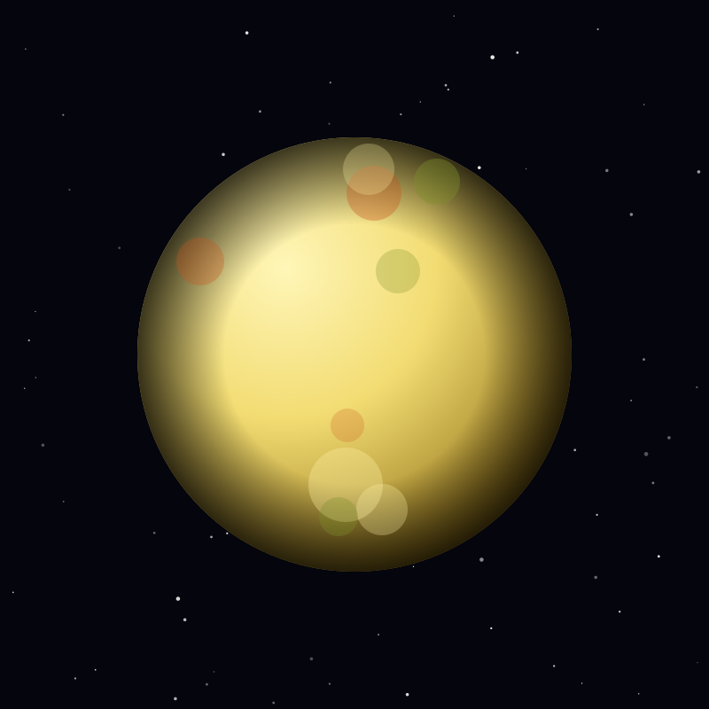

Moon
Io
The most volcanically active world in the solar system, kept molten by the tidal grip of Jupiter and its sibling moons.
Object 09 of 26

Key facts
- Distance from Earth
- 780 million km (avg)
- Radius
- 1,822 km
- Surface gravity
- 1.80 m/s²
- Orbital period
- 1.77 days
- Surface temperature
- -143°C average
- Active volcanoes
- 400+ confirmed
- Atmosphere
- Sulfur dioxide (trace)
- Discovered
- 1610, Galileo Galilei
Overview
Io is slightly larger than our own Moon and orbits closest of the four Galilean satellites to Jupiter, completing a lap every 42 hours. It is tidally locked, so one face always points at the planet.
Its surface is painted in yellows, oranges, whites and reds by sulfur compounds, and it is free of impact craters — any crater is quickly buried by fresh volcanic material.
Tidal Heating
Io's orbit is kept slightly eccentric by a resonance with Europa and Ganymede: for every four orbits Io makes, Europa makes two and Ganymede one. Because the orbit is never a perfect circle, Jupiter's gravity flexes Io's body continuously.
That flexing generates enormous internal friction and heat — enough to melt the interior. Io radiates about twice as much heat as it receives from the Sun, and all of it is produced by tides.
Volcanism
Io has more than 400 confirmed volcanoes, some filling lava lakes hundreds of kilometres across. Loki Patera alone can outshine the rest of the moon in infrared. Eruptions loft sulfur dioxide plumes 300 kilometres above the surface.
The escaping gas forms a doughnut of charged particles around Jupiter and feeds the intense radiation belts that make the Jovian environment so hostile to spacecraft and electronics.
Exploration
Voyager 1 made the discovery in 1979 when engineer Linda Morabito noticed a crescent bulging off the limb while enhancing an image — the first active volcano ever seen beyond Earth.
Galileo, Juno and ground-based telescopes have monitored Io ever since, but no spacecraft has orbited it. A dedicated Io Jupiter Observer remains a proposed way to watch the most violent world in the solar system up close.